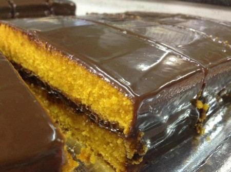

 Mussum Ipsum, cacilds vidis litro abertis. Si num tem leite então bota uma pinga aí cumpadi! A ordem dos tratores não altera o pão duris. Suco de cevadiss deixa as pessoas mais interessantis. Si u mundo tá muito paradis? Toma um mé que o mundo vai girarzis!
Dificuldade: Fácis | 68 visitis / 5 estrelis | Porçãozis: 8 pessoas
Desenvolvido por 1TDSJ - FIAP © 2019